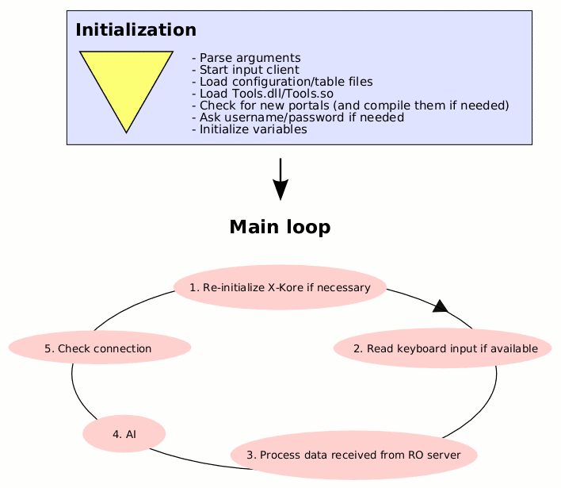

Initialization & main loop
High-level description of what Kore does
When you start Kore, it first loads configuration and table files. Then it connects to the Ragnarok Online server. It will now process all data received from the server, and calculate what to do (walking, attacking monsters, etc.), in an infinite loop (until the user tells Kore to quit).Initialization
openkore.pl is the main source file. The following image describes what happens when openkore.pl is run: The most important actions that Kore performs during initialization are:
- Parse arguments: Process any arguments passed to openkore.pl (type "openkore --help" to see a list of arguments).
- Start input client: Initializes the keyboard input system if the --daemon argument is not given.
- Load configuration files/tables: Parse and load config/*.txt and tables/*.txt.
- Load Tools.dll/Tools.so
- Check for new portals and compile them if necessary.
- Ask for username/password if it isn't already set in config.txt.
- Initialize variables
Main loop
Every loop in the main loop lasts for less than 0.01 seconds (exception: when it's calculating a route it can take a while). In each loop, the following things are performed:-
Re-initialize X-Kore if necessary
TODO: document how X-Kore works. -
Read keyboard input
If the keyboard input system is initialized (the --daemon argument is not given), and there is keyboard input available, then Kore will read the keyboard input and process the data with theparseInput()function. -
Process data received from RO server
TODO -
AI
The AI ("Artificial Intelligence") function calculates what actions to perform, when, and in what way. See also the page that describes the AI in detail. -
Check connection
checkConnection()is called. This function handles connection issues. It sets relevant connection variables and re-connects to the server for you if neccessary.